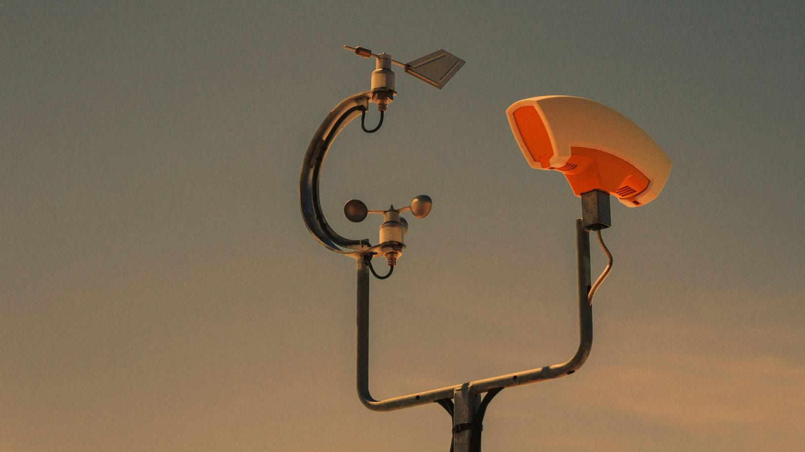
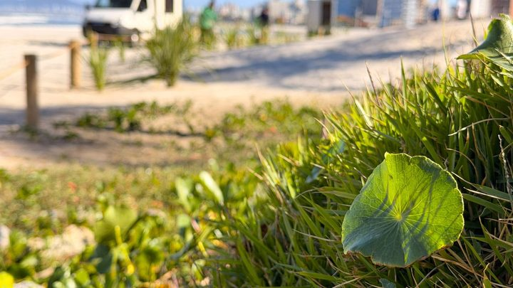

Santa Catarina · Serviço
Santa Catarina · ServiçoDefesa Civil alerta para temporais em Santa Catarina até domingo, com pico entre quinta e sexta
O tipo de aviso que hoje sai por estimativa regional e passa a ter medição na cidade.
A instalação terminou na sexta-feira, 4 de setembro. Uma estação ficou na antiga base da Defesa Civil, no Tabuleiro, e a outra na EMEB Vereador Paulo Reis, no Sertão do Trombudo. Vieram do consórcio da AMFRI, que prevê 38 pontos nos 11 municípios até o fim de setembro. Balneário Camboriú, na mesma rede, apareceu com quatro.
Em 30 segundos · Modo de Leitura, formato original Santa Informa
Itapema tem duas estações meteorológicas novas.
A instalação acabou na sexta-feira, 4 de setembro.
Uma fica no Tabuleiro.
É a antiga base da Defesa Civil.
A outra fica no Sertão do Trombudo.
É na EMEB Vereador Paulo Reis.
Elas medem chuva, vento, temperatura e umidade.
Vieram do consórcio da AMFRI.
A empresa é a MeteoBlue, com a Metos Brasil.
A Defesa Civil comprou mais duas com dinheiro próprio.
E avalia mais uma ou duas pelo consórcio.
A rede toda prevê 38 pontos.
Eles se espalham por 11 municípios.
O prazo é o fim de setembro.
Balneário Camboriú apareceu com quatro.
Navegantes, com duas.
Ninguém publicou o valor do contrato.
InfraestruturaPublicada em Redação Santa Informa

A Defesa Civil de Itapema passou a contar com duas estações meteorológicas dentro do município. A instalação terminou na sexta-feira, 4 de setembro. Uma delas ficou na antiga base da Defesa Civil, no bairro Tabuleiro. A outra foi montada na EMEB Vereador Paulo Reis, no Sertão do Trombudo. Os aparelhos medem temperatura, umidade, volume de precipitação e velocidade do vento. Vieram do consórcio da AMFRI, em parceria com a MeteoBlue e a Metos Brasil, empresa responsável pela instalação e pela manutenção. E não param nessas duas: a Defesa Civil informou que comprou outras duas estações com recurso próprio, e que avalia com o consórcio instalar mais uma ou duas nos próximos meses.
As estações de Itapema fazem parte de uma rede regional. O contrato é do CIM-AMFRI com a Meteoblue do Brasil, empresa ligada ao grupo suíço Windy.com, com cooperação técnica da Secretaria de Estado da Proteção e Defesa Civil. A etapa inicial coloca 20 pontos de medição em nove municípios da Foz do Rio Itajaí. O projeto completo prevê 38 pontos nos 11 municípios do consórcio até o fim de setembro: Balneário Camboriú, Balneário Piçarras, Bombinhas, Camboriú, Ilhota, Itajaí, Itapema, Luiz Alves, Navegantes, Penha e Porto Belo. Os equipamentos funcionam com energia solar, têm sinal próprio de internet e mandam o que medem para o Sistema de Monitoramento e Alerta do Estado.
Juntamos o que cada prefeitura publicou até agora, e a divisão não sai igual. Balneário Camboriú apareceu com quatro estações na rede, três novas (Nova Esperança, Taquaras e Cristo Luz) e uma que já existia, na Paróquia Santa Inês, com instalação em 1º de setembro. Navegantes ficou com duas, uma na sede da Prefeitura, no Centro, e outra na EMEB Professora Maria Tereza Leal, no Porto Escalvado. Itapema ficou com duas. Nenhuma das três prefeituras publicou o valor do contrato, e nenhuma divulgou como os 38 pontos serão repartidos no fim.
Até agora o aviso de chuva que chegava a Itapema saía de estimativa feita para a região inteira. Com medidor dentro da cidade, a Defesa Civil passa a ver o que cai em cada ponto, e não a média de um pedaço do litoral. Em Navegantes, o coordenador da Defesa Civil, Alan Rodrigues, resumiu assim: "Deixamos de trabalhar apenas com estimativas regionais genéricas para ter diagnósticos locais exatos". Os dois endereços escolhidos em Itapema também dizem alguma coisa. O Tabuleiro é área urbana de baixada, onde o problema é alagamento. O Sertão do Trombudo fica na parte de morro, onde a conta é outra. Em agosto, quando a Defesa Civil do Estado alertou para temporais em Santa Catarina inteira, o aviso valia para o mapa todo. Agora existe termômetro e pluviômetro daqui.
O resumo de 30 segundos está no topo e a versão completa é o texto acima. Aqui ficam as três leituras da casa sobre o mesmo assunto.
Clara, a otimista
Duas estações não parecem grande coisa até você lembrar que antes não havia nenhuma medindo dentro da cidade. Chuva no litoral não cai igual em todo canto: pode estar seco na orla e caindo o mundo lá no morro. Quem mora no Sertão do Trombudo sabe disso de cor.
E tem um detalhe bonito nessa história. A Defesa Civil não esperou o consórcio resolver tudo: comprou mais duas com dinheiro do próprio município. Quando o poder público entra com recurso em cima do que já veio de graça, é sinal de que a coisa está sendo levada a sério.
Seu Prudêncio, o criterioso
Merece atenção o que não foi publicado. Nenhuma das prefeituras divulgou o valor do contrato com a Meteoblue, e estamos falando de uma rede de 38 pontos em 11 municípios, com manutenção contratada. Contrato de consórcio é dinheiro público repartido entre as cidades, e o morador tem direito de saber quanto sai da parte de Itapema.
Vale acompanhar também a operação depois da inauguração. Estação meteorológica é equipamento que exige calibração, limpeza de sensor e troca de peça. Painel solar em cima de prédio de escola pega poeira e maresia, e sensor que para de medir sem ninguém perceber é pior que sensor nenhum, porque dá falsa segurança. Uma sugestão útil seria a Prefeitura publicar uma página com a leitura das estações e a data da última manutenção de cada uma.
Dito isso, a decisão está correta e é das boas. Medir chuva onde ela cai custa pouco perto do estrago de um alagamento sem aviso. E escolher um ponto na baixada e outro no morro mostra que alguém pensou no mapa antes de furar a parede. É o tipo de investimento que só aparece no dia em que faz falta.
Caco, o sarcástico
Itapema agora tem estação meteorológica de verdade, com anemômetro, cata-vento e tudo. Ou seja, daqui para frente, quando você sair de casa sem guarda-chuva e voltar encharcado, vai ser um erro devidamente documentado por um equipamento suíço.
Reparei que uma delas foi parar na antiga base da Defesa Civil. Prédio que já foi sede virou poste de sensor. É reaproveitamento, e eu respeito.
Reclamar mesmo, só de uma coisa: agora não dá mais para dizer que "choveu muito" e ninguém contestar. Vai ter número. O papo de calçada nunca mais vai ser o mesmo.
Fontes: Visor Notícias, publicação de 5 de setembro de 2026, de onde saem os dois endereços em Itapema, a conclusão da instalação em 4 de setembro, o que os aparelhos medem, a parceria com MeteoBlue e Metos Brasil, a informação de que a Defesa Civil comprou outras duas estações com recurso próprio e a avaliação de mais uma ou duas junto ao consórcio. Os números da rede regional, a etapa inicial de 20 pontos em nove municípios, os 38 pontos nos 11 municípios até o fim de setembro, o funcionamento por energia solar, a integração ao Sistema de Monitoramento e Alerta do Estado e a fala do coordenador Alan Rodrigues estão no aviso oficial da Prefeitura de Navegantes, de 4 de setembro de 2026. Os dados de Balneário Camboriú, as quatro estações, os bairros e a lista dos 11 municípios consorciados saem de reportagem da TVC Panorama, de 2 de setembro de 2026. A comparação entre as três cidades foi montada por nós a partir dessas publicações. Até o fechamento desta matéria, o site da Prefeitura de Itapema não trazia nota própria sobre as estações, e nenhuma das prefeituras havia publicado o valor do contrato.
Santa Catarina · ServiçoO tipo de aviso que hoje sai por estimativa regional e passa a ter medição na cidade.
A conta que chega depois, quando o temporal já passou pelo telhado.

Navegantes · Meio AmbienteA outra frente em que Navegantes anda na frente de Itapema neste mês.